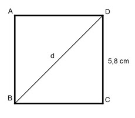

Aufgabe 17 Ein Quadrat hat eine Seitenlänge von 5,8 cm. Wie groß ist seine Diagonale d?

Die Diagonale d halbiert das Quadrat in 2 rechtwinklige und gleichschenklige Dreiecke. Deswegen ist α = 45°. CD sin α = ------ |*d d sin 45° * d = CD |:sin 45° CD 5,8 cm d = --------- = ---------- = 8,2 cm sin 45° 0,7071